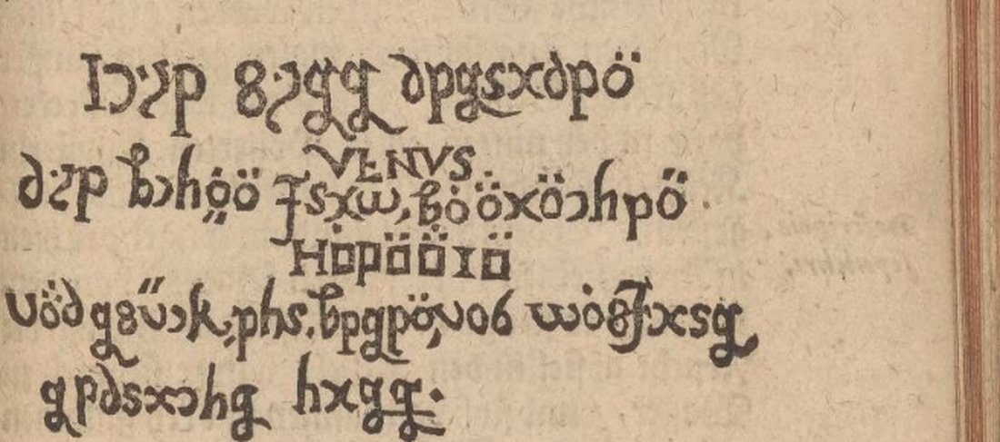
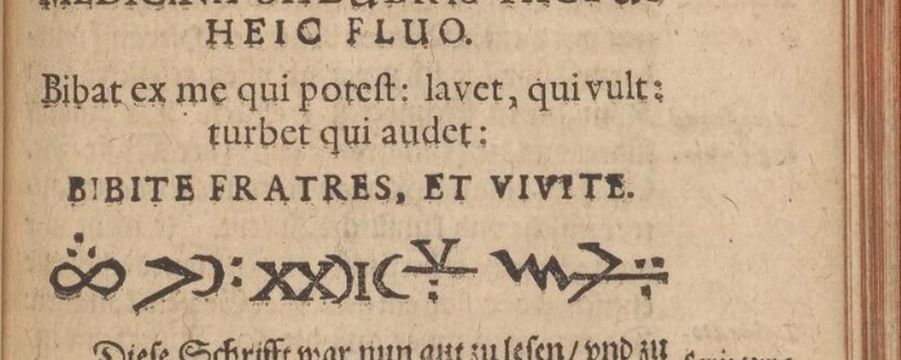
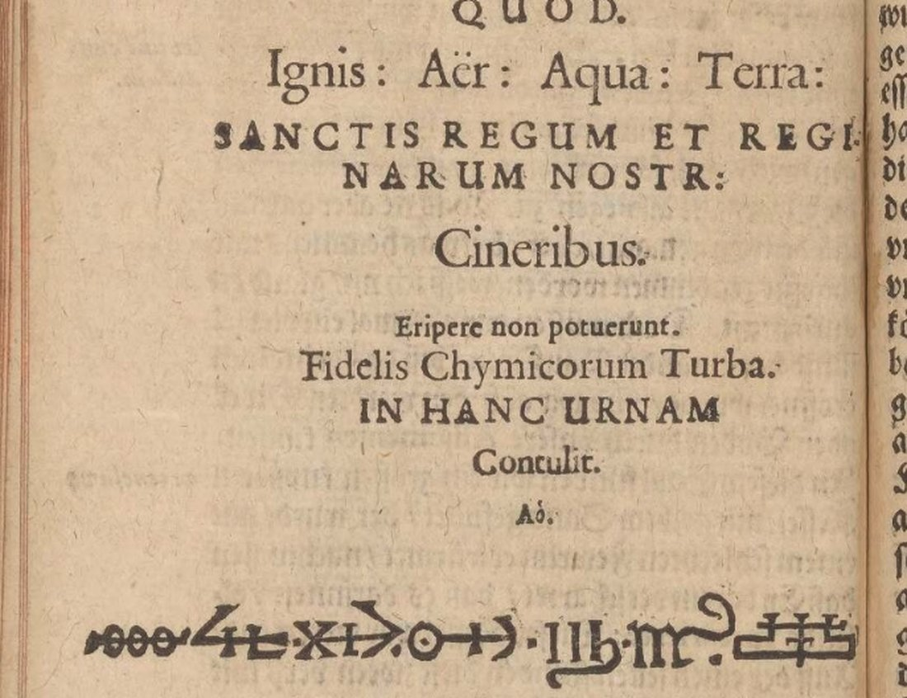

01 The book, not a letter
DECODE R4502 was uploaded by the Embassy of the Free Mind with the title "Johann Valentin Andreae, 'Chymische Hochzeit Christiani Rosenkreutz'", eight images and a note: "This rosicrucianism book in German has four pages with ciphertext. As far as is known, this has never been deciphered." The owner adds that the library holds three copies and only one was photographed. When DECODE's catalogue was imported here, the rule scorer turned the record into a "letter to an unknown recipient". The images show the title page (Strassburg, "In Verlägung Lazari Zetzners S. Erben", 1616) and five openings, pp. 72–73, 94–95, 96–97, 98–99 and 116–117, and the colophon (Conrad Scher, 1616). The four with cipher are:
- p. 73, Day IV: a line of signs under the fountain inscription Hermes Princeps … Bibite fratres, et vivite;
- p. 95, Day V: the words in copper letters on the iron door to Venus's vault;
- p. 97, Day V: the tablet behind the bed where Venus sleeps;
- p. 116, Day VI: the line after Anno at the foot of the urn inscription.
02 The door to Venus's vault, p. 95

HIE LIGT BEGRABEN VENUS DIE SCHON[E] FRAW SO MANCHEN HOHEN MANN UMB GLUCK EHR SEGEN UND WOLFART GEBRACHT HATT
"Here lies buried Venus, the fair lady who has brought so many high men to lose fortune, honour, blessing and welfare." The narrator copies it "into my writing tablet". On the next page, when he asks what the tomb means, the boy answers: "hie ligt begraben (sagt er) Venus die schöne Fraw / so manchen hohen Mann umb Glück / Ehr / Segen und Wolfart gebracht hatt" (p. 96).
03 The tablet behind the bed, p. 97

WAN DIE FRUCHT MEINES BAUMS WIRT VOLLENDS VERSCHMELZEN WERDE ICH AUFWACHEN UND EIN MUTER SEIN EINES KONIGS
"When the fruit of my tree has quite melted, I shall awake and be the mother of a king." On p. 98 the boy repeats what he heard Atlas tell the King: "wann der Baum … wirdt vollends verschmeltzen / so wirdt Fraw Venus wider erwachen / vnd sein ein Mutter eines Königs".
04 The alphabet
Both inscriptions use one simple substitution. There is one sign per letter, words are divided, and there are no nulls or code words. The 156 letters use 19 signs, with one capital form (the initial H). U and V share a sign. M, N and O are three dotted variants of one shape. The pairs are fixed by words the boy's glosses supply: B-E-G-R-A-B-E-N gives b, e, g, r, a, n; F-R-A-W gives f, w; G-L-U-C-K gives l, u, c, k; F-R-U-C-H-T gives h, t; and so on. Every sign that occurs has a value, and the table read over both texts gives no contradiction. The alphabet is the author's own: only 20 letters of German occur, and there is nothing to compare it with.
| Letter | A | B | C | D | E | F | G | H | I | K | L | M | N | O | R | S | T | U/V | W | Z |
|---|---|---|---|---|---|---|---|---|---|---|---|---|---|---|---|---|---|---|---|---|
| Stand-in | x | d | c | 6 | p | J | g | h, H | z | k | 8 | m | n | o | s | b | q | v | w | Z |
The stand-ins are the Latin letters the signs most resemble. The full table with descriptions of the shapes is in
andreae1616/key.tsv, and decode.py turns the transcription into the reading.
05 The two sign lines: dates


These two lines are not letter ciphers. They mix Roman numerals with alchemical and planetary signs, and they are dates. The English edition on crcsite.org, which follows Foxcroft's translation of 1690, gives 1378 for the fountain line (footnote 12) and 1459 for the urn (footnote 21). It also reads the ligature at the right end of the urn line as P.H.M.D., "Paracelsus Hohenheimensis Medicinae Doctor". 1378 is the birth year the Rosicrucian manifestos give Christian Rosencreutz. 1459 is the year on the title page.
Checked against the signs: the urn line has four rings (CCCC), an IX and an M, which fit M CCCC L IX. The fountain line opens with a lemniscate carrying three dots, ∞ being an old sign for 1000, and it has XX and a V with dots, which fit M CCC LXX VIII. Both readings are graded C (probable): the structure agrees with the published years, but the signs for L and for the smaller units are not identified one by one, and each line is too short to fix them.
06 What stays open
- The individual numeral signs of the two date lines (grade C as wholes). They are one-off symbolic dates of about ten signs each, too short to fix every value.
- The three dotted signs for M, N and O were separated with the plaintext in view: at DECODE's resolution, about 1,450 px per opening, the dots are too small to tell them apart blind. A better image would settle them. The other 16 signs are unambiguous and fix the text by themselves.
- The other two Ritman copies were not photographed. The 1616 edition was printed from standing type, so they should carry the same inscriptions.
DECODE should list R4502 as decrypted: a printed book, not a letter, with a simple substitution plus two symbolic dates. The correction is queued.
07 Sources
- Embassy of the Free Mind (Ritman Library), Chymische Hochzeit, Strassburg 1616: DECODE R4502, public images 2–8.
- The novel's own glosses: pp. 96 and 98 of the same edition; also the transcription of the 1616 print in the Deutsches Textarchiv, which leaves the inscriptions out as figures.
- E. Foxcroft (tr.), The Hermetick Romance: or The Chymical Wedding, London 1690, in the online edition of the Confraternity of the Rose Cross: Day 4 (note 12), Day 5 (notes 14, 15), Day 6 (note 21).
Transcription, sign table, decoder and notes: andreae1616/.